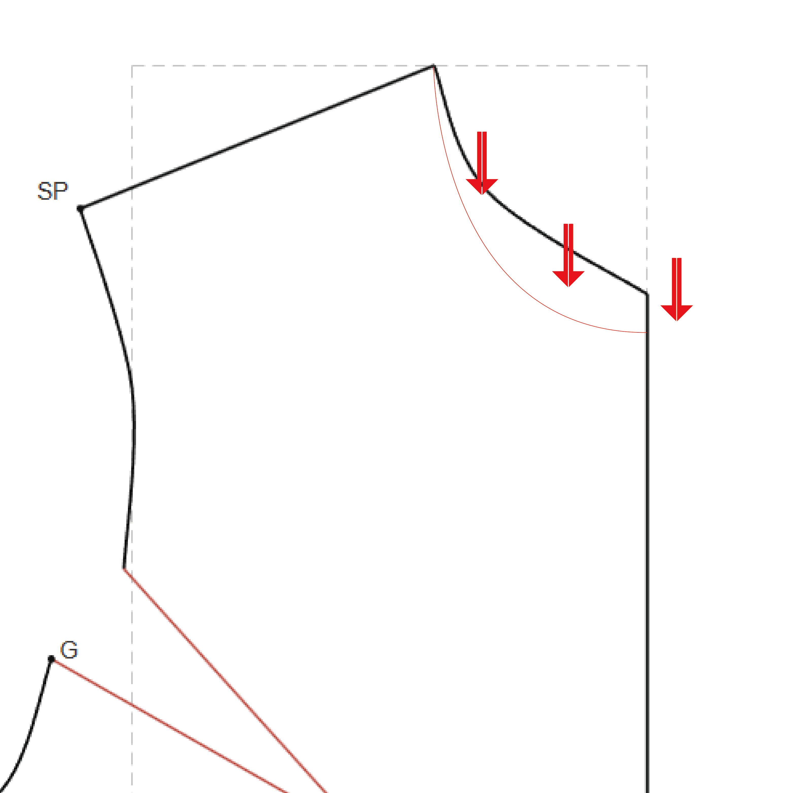
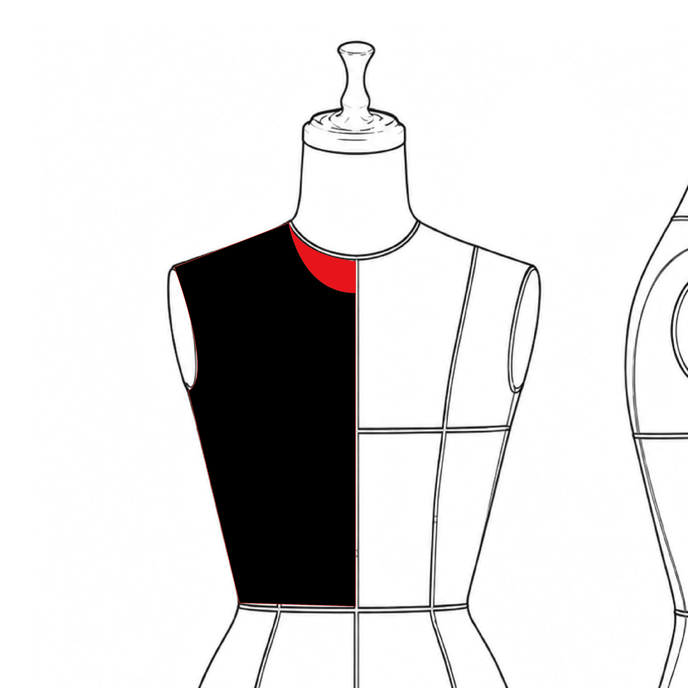

先立一個觀念：畫出來的原型版，是極其貼近身體的一張版。貼到什麼程度？它的領圍線（領口那一圈線）就是沿著脖子根部描出來的——衣服做出來，布會恰恰貼在脖子上。
但日常沒有人穿這麼貼的衣服。最直接的問題是：領口僅有脖子那麼細，頭根本穿不過去。所以拿到原型版之後，領口往往需要挖大、或調整大小，才能成為一件真正穿得進去的衣服。
調整的方向有二，可以單用，也可以並用：
這兩種修改都完全正常、可以放手去做。原型版不是不可更動的聖旨——它生來，就是給你改的底。

